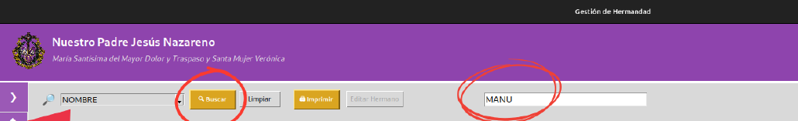
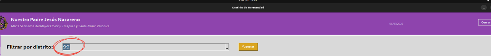

El proyecto
Desarrollé una aplicación de escritorio para ayudar a la hermandad Nuestro Padre Jesús Nazareno, María Santísima del Mayor Dolor y Traspaso y Santa Mujer Verónica, de Villacarrillo, a organizar las tareas habituales de gestión de sus hermanos.
El trabajo abarcó la base de datos, la lógica de la aplicación, la interfaz y la elaboración de una guía para facilitar su uso.
Consulta y gestión de hermanos
La sección de listados permite buscar y ordenar registros, consultar sus datos y generar un PDF del listado. Desde la aplicación también se pueden realizar altas, bajas y modificaciones.

Cuotas y automatizaciones
La aplicación permite consultar las cuotas por distrito e imprimirlas como listado o para un hermano seleccionado. Durante el alta, el distrito y la cuota se asignan automáticamente según la calle y la edad; para calles del listado también se completan localidad y provincia.

Tecnologías y aprendizaje
La solución combina Python, Tkinter y SQLite, con generación de informes PDF. Fue un proyecto sin ánimo de lucro para una entidad real, que me permitió trabajar desde las necesidades de los usuarios hasta la implementación y documentación de una herramienta completa.